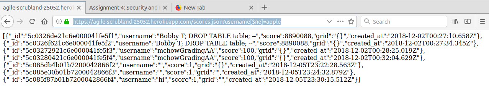

Provide a description of the product and what you were hired to do
Describe your methodology pen testing the application, including the tools that you used
Provide an overview of all the security and privacy issues you identified. This section should be written for non-technical managers who do not have technical expertise and do not have time to read the entire document. Write this section using lay language.
The programmer decided to implement the wild card for the server's CORS policy.
response.header("Access-Control-Allow-Origin", "*");
This is a security risk because such policy gives any site access the server's response. Hence, an attacker can easily send an XHR request to the programmer's site and steal valuable information. Allowing access from al domains means that any domain can perform two-way interaction with the application via this request. Hence, this security risk exposes the programmer's site to a "man in the middle" attack.
In all three routes, POST /submit, GET /scores.json, and GET /
When considering the severity of CORS security risks, we need to factor in the degree of vulnearability CORS exposes to the public. In our case, the information stored in the database is relative insensitive, thus it is not considered a big issue. However, in the real world, websites that contains valuable personal information of users with a CORS security leak would result in severe consequences.
As seen in line 25, 71, and 101 of index.js
One suggestion in addressing this issue is adjusting the wild card to only allow resources sharing for selected sites.
Access-Control-Allow-Origin: (insert url)
Origin specifies a URL and is allowed to make cross-domain requests. For example, when a site makes a request, the request page, checks if the response header of that site is a permitted request domain. If it is an unknown source, the requestd page triggers the XMLHttpRequest error event and denies the response data.
One possible future consideration is to disable CORS as a whole. Many APIS, such as Twitter, Yelp!, FB, do not enable CORS. Instead, get/post requests are made from the server-side.
The programmer did not protect against malicious data aggregation.
I was able to verify the security risk by searching using query parameters and the $ne operator.
https://agile-scrubland-25052.herokuapp.com/scores.json?username[$ne]=apple
Specifically, this URL address will display all the scores that do not have apple as the username. This is a security risk because attackers can provide a specially-crafted input(such as $ne) to take advantage of the search query. The attacker has access to data without authorization by tricking the database into providing too many results for a query.
In GET /scores.json
This issue is high risk because by manipulating the search query, the attacker now easily has information of everything in the database. If the database was storing more valuable information, for example credit card or residential information, this would cause great loss to the company of that website.

The image shows the results after searching for all the documents in the 2048 Gamecenter database that does not have the username "apple". In this case, all of the information is exposed to the attacker
One suggestion in addressing this issue is to prevent database injection vulnerabilities in the first place by usng parameterized queries. These types of queries specify placeholders for parameters so that the database will treat them as data/string rather than a command. Another possible solution is to modify the query string to remove any potentially malicious query characters. The programmer may choose to implement a sanitize_query() function that modifies the string before the query is used to find documents in the database.
One possible future consideration is to look into the HtmlSanitizer .NET library that is used for cleaning HTML fragments and document. This build is shown to be passing currently.
The programmer did not protect against malicious data aggregation.
I was able to verify the security risk by searching using query parameters and the $ne operator.
https://agile-scrubland-25052.herokuapp.com/scores.json?username[$ne]=apple
Specifically, this URL address will display all the scores that do not have apple as the username. This is a security risk because attackers can provide a specially-crafted input(such as $ne) to take advantage of the search query. The attacker has access to data without authorization by tricking the database into providing too many results for a query.
In GET /scores.json
This issue is high risk because by manipulating the search query, the attacker now easily has information of everything in the database. If the database was storing more valuable information, for example credit card or residential information, this would cause great loss to the company of that website.
The image shows the results after searching for all the documents in the 2048 Gamecenter database that does not have the username "apple". In this case, all of the information is exposed to the attacker
One suggestion in addressing this issue is to prevent database injection vulnerabilities in the first place by usng parameterized queries. These types of queries specify placeholders for parameters so that the database will treat them as data/string rather than a command. Another possible solution is to modify the query string to remove any potentially malicious query characters. The programmer may choose to implement a sanitize_query() function that modifies the string before the query is used to find documents in the database.
One possible future consideration is to look into the HtmlSanitizer .NET library that is used for cleaning HTML fragments and document. This build is shown to be passing currently.